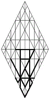

jycm |
 |
| messiah | |
|
Immanuel, the Indwelling; the Father’s Spirit, as manifested within a surrogate, or through an anointed servant; by usage, from the Greek: “Christ,” signifying an individual born to serve as the unique vehicle of the Father’s Spirit. |
The cleansing
m fire
c
identified
y
by Torah
j as an ineffable
m Presence
c
is the agent
y
of our ascent on Jacob’s Ladder
j. We are to be cleansed
m in the Holy Breath of Wisdom
c, that we can serve
y within the brotherhood
j of the anointed ones
m—those are separated
c to serve as ministers
y to their brethren
j.
Those who are anointed
m must be purified
c by the interiorization
n of Torah
j.
Numerology
52
bn
>
25 hk
>
7 z:
Their meek
n souls
b
give witness
k
to the Father’s healing
h
and his deliverance
z;
| David | ||
|
site |
Stepping Stones |
book |